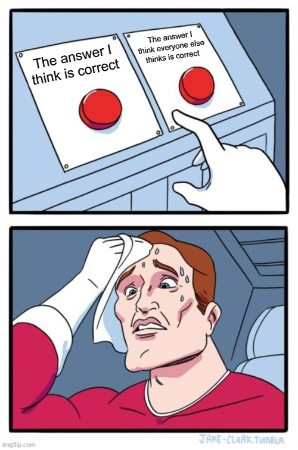

5
MODULE 5 · APPLIED GAME THEORY · RRPF
COORDINATION
GAMES
Solving games with multiple equilibria
J. RYAN LAMARE
MODULE 5
Learning objectives
1
Play guess two-thirds of the average, and find out at the end who won
2
Take the common knowledge quiz and see where the room converges
3
Use best response analysis to find every Nash equilibrium in a game
4
Play three coordination games – stag hunt, battle of the sexes, and chicken
MODULE 5
Introduction
So far, we’ve covered sequential choices, simultaneous zero-sum choices, and the prisoner’s dilemma
Sequential choices
Simultaneous zero-sum choices
The prisoner’s dilemma
Although the prisoner’s dilemma gets a lot of attention, other theories are equally important in explaining strategic thinking!
MODULE 5
Games with multiple equilibria
- So far, we have considered only games where one unique solution is present
- But there are often instances where individuals can conceive of many strategies capable of generating similar outcomes
- Games with multiple equilibria often require some sort of coordination by the players in order to reach a useful resolution
One equilibrium
→
Several equilibria
MODULE 5 · GUESS TWO-THIRDS
Guess two-thirds of the average
- Pick any whole number between 0 and 100
- The individual whose number is closest to two-thirds of the room’s average wins!
- So, if the guesses were 5, 25, and 60, the winner would be…
- Lock your number in now – we’ll come back to this at the end of the session

ryanlamare.com/go
0RESPONSES
DEMO DATA
MODULE 5 · THE COMMON KNOWLEDGE QUIZ
Let’s have a pop quiz!

MODULE 5 · THE COMMON KNOWLEDGE QUIZ
The common knowledge quiz
- The goal is to get as many answers correct as you possibly can
- But here’s the thing: the right answer is the answer the room provides. You score a point only when at least 80% of the room answers the way you did
- No conferring: you are coordinating on instinct!
- Ten minutes, sixteen questions, on your phones. Then we’ll go through the scores together

ryanlamare.com/go
10:00
–STARTED–FINISHED
MODULE 5 · THE COMMON KNOWLEDGE QUIZ
Where the room converged
DEMO DATA
The coin flipA positive number
The boxes
13 · 261 · 100 · 99 · 555
Meet in Paris
Meet in New York
Meet in London
The football player
MODULE 5 · THE COMMON KNOWLEDGE QUIZ
Where the room converged
DEMO DATA
The pop singerThe election
$100, two piles
The favorite club
The favorite national team
First thing tomorrow
The dropped call
Pick a colour
MODULE 5 · FOCAL POINTS
Focal points and common knowledge
- The right answer was wherever the room landed together. We need to identify a focal point where our expectations can converge
- How might we find one? We have to consider common knowledge
- Do you know what everyone else in the room will answer?
- Does everyone else know that you know?
- Are you all 100 percent sure?
The spot everyone guesses is the focal point
MODULE 5 · BEST RESPONSE
Best response and the Nash equilibrium
- We need a comprehensive way to identify parties’ ideal strategies in all games, not just prisoner’s dilemmas or zero-sum games
- We know to identify dominant strategies and reject inferior ones – but what if there are no clear answers even then? Can we still find an equilibrium?
- The answer is yes – thanks to John Nash!
MODULE 5 · BEST RESPONSE
Nash equilibrium
A Nash equilibrium is a combination of two conditions:
1
Each player is choosing a best response to what he believes the other players will do in the game
2
Each player’s beliefs are correct. The other players are doing just what everyone else thinks they are doing
MODULE 5 · BEST RESPONSE
Best response analysis, worked
PLAYER 2
PLAYER 1
Left
Middle
Right
Top
High
Low
Bottom
3,1
2,3
10,2
4,5
3,0
6,4
5,4
2,2
12,3
5,6
4,5
9,7
Player 1’s best response in each column
Player 2’s best response in each row
Nash equilibrium. The one cell holding both circles.
MODULE 5 · THE INVESTMENT GAME
The investment game
- Let’s play a game where you can win lots of money!
- You have two choices – invest, or don’t invest. Investing puts $100 into the pot; sitting out puts in nothing, and risks nothing
- If you invest and 90% of the room invests too, you get your $100 back and I’ll give you another $50
- If less than 90% of the room invests, you lose your $100 and get nothing back
- We’ll play two rounds, and your wins and losses add up
- Round one is played in silence. Then one volunteer can address the room before round two

ryanlamare.com/go · pick your name, then choose each round
MODULE 5 · THE INVESTMENT GAME
The investment board
0IN ROUND 1
ROUND 1 OPEN
DEMO DATA
Round 1
Invested
Didn’t invest
Round 2
Invested
Didn’t invest
MODULE 5 · STAG HUNT
What you just played
EVERYONE ELSE
YOU
Invest
Don’t Invest
Invest
Don’t Invest
+$50,+$50
−$100,$0
$0,+$50
$0,$0
Two Nash equilibria on the diagonal – everyone invests, or nobody does…
and investing pays only if you can trust the room to invest too.
A coordination game, commonly known as stag hunt.
MODULE 5 · STAG HUNT
Stag hunt
- Two hunters set off to find food. A stag feeds both of them, but it takes both of them to catch it. A hare feeds one, and one hunter can catch it alone
- With no way to communicate before they set off, each has to guess what the other will hunt
- If Hunter 1 goes after the stag, Hunter 2 should go too – but there is no way for Hunter 2 to know where Hunter 1 is going
- Both sides need to coordinate in order to be successful
HUNTER 2
HUNTER 1
Hunt Stag
Hunt Hare
Hunt Stag
Hunt Hare
3,3
0,1
1,0
1,1
MODULE 5 · GAME THEORY IN YOUR WORLD
Tapas: the bigger prize?
- Both sides can see something bigger than one spare engine behind this deal
- Going big pays off only if the other side goes big too. Going big alone is wasted effort
- Just doing the one engine is safe – and small
- What would it take for both sides to go big?
TAPAS
RRPF
Build the bigger partnership
Just do the one engine
Build the bigger partnership
Just do the one engine
3,3
0,1
1,0
1,1
MODULE 5 · STAG HUNT
Overcoming coordination problems
- If only we could communicate, we could assure the other side that we’re better off at a certain equilibrium
- This is why key figureheads give speeches to restore confidence
- This is also one reason why leadership matters!
- Would strategic communication matter under a PD?
MODULE 5 · BATTLE OF THE SEXES
Battle of the sexes
- Here, unlike in stag hunt, you have a problem
- There are two equilibria, but the players have different preferences for each equilibrium point
- You’d both rather end up together than apart – and that makes coordination more difficult, and communication trickier as well
- Commonly (and misogynistically) known as the “Battle of the Sexes”
PARTNER B
PARTNER A
Plan A
Plan B
Plan A
Plan B
2,1
0,0
0,0
1,2
MODULE 5 · LET’S PLAY
Whose system?
- Northeast Airlines and Dalta Air Lines have just merged, and they have to run one booking system
- Both airlines are used to their own systems, but the merger can’t be finalized until a single system is agreed on
- Your phone puts you on one airline
- If both sides back the same system, you switch to it. If not, the merger is delayed
- Vote. Then one volunteer addresses the room – and we vote again
0RESPONSES
DALTA
NORTHEAST
Northeast’s system
Dalta’s system
Northeast’s system
Dalta’s system
2,1
0,0
0,0
1,2
MODULE 5 · LET’S PLAY
Where did the room land?
0RESPONSES
ROUND 1 OPEN
DEMO DATA
Round 1
Northeast’s system
Dalta’s system
Northeast
Dalta
Round 2
Northeast’s system
Dalta’s system
Northeast
Dalta
MODULE 5 · BATTLE OF THE SEXES
The coordination problem in scouting in Moneyball
Grady’s room
EVERYONE ELSE IN THE ROOM
HEAD SCOUT
Subjective looks
Objective skills
Subjective looks
Objective skills
2,2
0,-1
0,-1
1,1
Billy Beane’s room
EVERYONE ELSE IN THE ROOM
BILLY BEANE
Subjective looks
Objective skills
Subjective looks
Objective skills
1,2
0,-1
0,-1
2,1
MODULE 5 · CHICKEN
Chicken
- Two drivers head straight at each other. Whoever swerves first loses face, and whoever holds the line wins
- If both swerve, nobody wins and nobody loses
- If neither swerves, both crash – the worst outcome for both of them
- Two equilibria again – one of you swerves – but each of you wants it to be the other one
DRIVER 2
DRIVER 1
Swerve
Straight
Swerve
Straight
0,0
-10,+10
+10,-10
-100,-100
MODULE 5 · CHICKEN
Solving games of chicken
- There are two equilibrium points in this game (swerve/straight)
- So how do you win?
- One way is to convince the other side that under no circumstances will you swerve – we’ll return to commitment and credibility later
- Another way is to alternate swerve/straight strategies if you play a repeated game
CHUCK
REN
Swerve
Straight
Swerve
Straight
0,0
-10,+10
+10,-10
-100,-100
MODULE 5 · CHICKEN
Let’s play chicken!
- Rebel Without a Cause: two stolen cars, one cliff, and whoever jumps first is chicken
- Buzz’s sleeve catches on the door handle. He cannot jump, so he goes over – committed to go straight, by accident
- Jim swerved because he could. Was Buzz playing chicken at all by the end?
MODULE 5 · LET’S PLAY
The hub lease
- USA Air runs its hub out of Plattsburgh Airport. The lease is up, and the airline wants a big cut in its gate and landing fees, or it moves the hub
- Plattsburgh has said it can’t afford the cut. Each side can hold firm or give ground
- If one side gives ground, the other gets its way. If both give, you split the difference
- If both hold firm, the hub is moved elsewhere: USA Air loses its network, and Plattsburgh loses its biggest tenant and the jobs that come with it
- Vote. Then one volunteer addresses the room – and we vote again
0RESPONSES
PLATTSBURGH
USA AIR
Give ground
Hold firm
Give ground
Hold firm
Split,Split
Gives in,Gets its way
Gets its way,Gives in
Hub moves,Hub moves
MODULE 5 · LET’S PLAY
Who gave ground?
0RESPONSES
ROUND 1 OPEN
DEMO DATA
Round 1
Give ground
Hold firm
USA Air
Plattsburgh
Round 2
Give ground
Hold firm
USA Air
Plattsburgh
MODULE 5 · GUESS TWO-THIRDS
Finding the Nash equilibrium in the two-thirds game
- How do we solve this game? Remember common knowledge and successive elimination of inferior strategies
- Let’s say everyone in the room guessed 100…what should you guess?
- 100 × (2/3) = 67, so we can eliminate numbers 68 or above
- But if nobody will play above 67, your winning strategy should be 2/3 of those choices
- 67 × (2/3) = 45, so we can now eliminate numbers 46 or above
- And so on (30, 20, 13, 9…)…all the way down to 0, which is the Nash equilibrium
- So, all of those who answered 0 got it right…or did they??
MODULE 5 · GUESS TWO-THIRDS
Finding the Nash equilibrium in the two-thirds game
0Numbers in
–The room’s average
–Two-thirds of that
DEMO DATA
MODULE 5 · WHERE NEXT
Where we land
Stag Hunt
Aligned – trust unlocks the best one
Battle of the Sexes
Different preferences over which one
Chicken
Opposed – miscoordination is disaster
Where you land turns on focal points. Next session: mixed strategies – when the right move is to be unpredictable.
MODULE 5 · TOP OF THE CLASS
Top of the class
QuizTwo-thirdsTotal
DEMO DATA
12
3
4
5
Points from the common knowledge quiz and the two-thirds game, on top of your running total. Top five only – check your own score any time at ryanlamare.com/go/points.